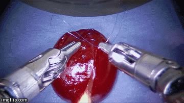
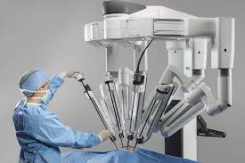

La cirugía robótica, o cirugía asistida por robot, permite a los médicos realizar muchos tipos de procedimientos complejos con mayor precisión, flexibilidad y control en comparación con las técnicas convencionales.
El sistema quirúrgico robótico clínico más usado cuenta con un brazo para cámara y brazos
mecánicos, e instrumentos quirúrgicos montados en ellos.
El cirujano controla los brazos mientras está sentado frente a una consola de computadora cerca de la mesa de operaciones.
Los cirujanos que usan el sistema robótico consideran que en varios procedimientos mejora la precisión, la flexibilidad y el control durante la operación,y les permite ver mejor el lugar, en comparación con las técnicas tradicionales.
La cirugía robótica supone riesgos, algunos de los cuales pueden ser similares a los de la cirugía abierta
convencional, como, por ejemplo, un leve riesgo de infección y otras complicaciones.

VENTAJAS
Cirugía mínimamente invasiva: al efectuarse cortes pequeños y precisos, la zona donde se emplea la técnica está muy controlada.
Una mejor visión: gracias a la cámara incorporada en el brazo robótico obtenemos una visión más clara del campo de actuación.
Elimina el temblor de las manos: ya que es un efecto humano y los movimientos del robot son totalmente mecánicos.
Menos complicaciones: se producen menos infecciones, puesto que el brazo quirúrgico se mantiene totalmente esterilizado en todo el proceso.
Menos pérdidas de sangre: al ganar precisión se disminuye el riesgo de efectuar un corte demasiado profundo o en algún lugar incorrecto.
Recuperación más rápida: en este tipo de intervenciones el tiempo de reposo es menor.
Cicatrices más pequeñas: los cortes a penas son perceptibles por lo que las marcas posteriores no se notarán tanto como en otro tipo de procedimientos.

Tipos de cirujias Roboticas